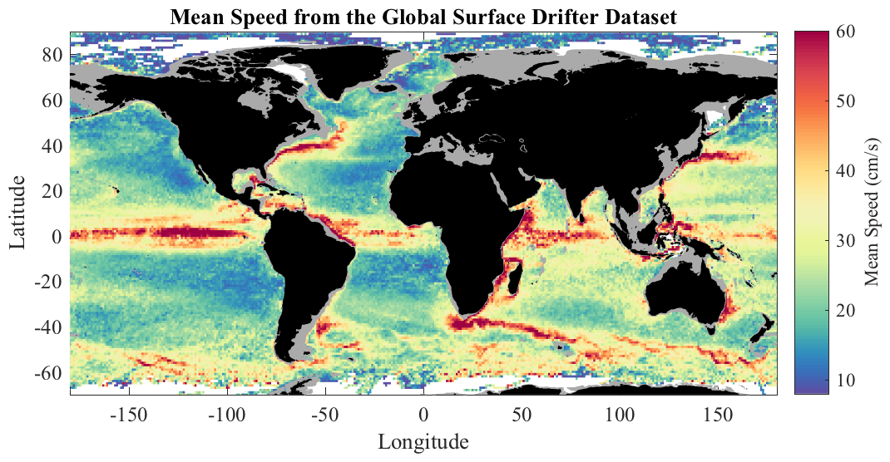

TWODSTATS Mean, variance, and covariance of functions of two variables. __________________________________________________________________  __________________________________________________________________ TWODSTATS computes the first- and second-order statistics of a function of two variables in prescribed bins. This function may either be a scalar-valued or vector-valued quantity at each point. An example of a scalar-valued dataset is temperature as a function of latitude and longitude. An example of a vector-valued dataset is wind or current velocity as a function of latitude and longitude. TWODSTATS, TWODHIST, and TWODMED are three related functions for computing statistics as a function two variables using very fast algorithms that avoid any loops through efficient use of indexing. __________________________________________________________________ Mean and standard deviation of a scalar-valued function MZ=TWODSTATS(X,Y,Z,XBIN,YBIN) where X, Y and Z are arrays of the same length, forms the mean of Z over the XY plane. If XBIN and YBIN are length N and M, respectively, then MZ is of size M-1 x N-1. Bins with no data are assigned a value of NAN. XBIN and YBIN must be monotonically increasing. MZ=TWODSTATS(X,Y,Z,N) uses N bins in the X and Y directions, linearly spaced between the minimum and maximum values. MZ is N-1 x N-1. MZ=TWODSTATS(X,Y,Z,[XMIN XMAX],[YMIN YMAX],N) uses N bins, linearly spaced between the designated X and Y values. MZ is N-1 x N-1. X, Y, and Z can also be cell arrays of numerical arrays, in which case all data values are concatented prior to finding the statistics. __________________________________________________________________ Additional output [MZ,XMID,YMID]=TWODSTATS(...) optionally returns the midpoints XMID and YMID of the bins. [MZ,XMID,YMID,NUMZ]=TWODSTATS(...) also returns the number of good data points in each of the (X,Y) bins. NUMZ is the same size as MZ. [MZ,XMID,YMID,NUMZ,STDZ]=TWODSTATS(...) also returns the standard deviation of Z in the (X,Y) bins. STDZ is the same size as MZ. __________________________________________________________________ Mean and covariance of a vector-valued function TWODSTATS can also be used to analyze a function which contains more than one value at each (X,Y) point. If Z represents a vector with K components, then Z should have the same size as X and Y in all but its last dimension, which will be length K. MZ=TWODSTATS(X,Y,Z,XBIN,YBIN) then returns MZ, containing the mean values of each component of Z in each bin. If M and N are the lengths of XBIN and YBIN, MZ is of size M-1 x N-1 x K. [MZ,XMID,YMID,NUMZ,COVZ]=TWODSTATS(...) returns the full covariance matrix COVZ in each of the bins. As the covariance of Z is K x K, the size of the output matrix COVZ is M-1 x N-1 x K x K. __________________________________________________________________ Algorithms By default, TWODSTATS now works with an internal call to Matlab's HISTCOUNTS2 and ACCUMARRAY functions, available as of Matlab 2015b. This is much faster than the previous algorithm. If HISTCOUNTS2 is not available, TWODSTATS uses loopless algorithm that is in turn much faster than an explicit loop. TWODSTATS(...,'jLab') uses this algorithm, while TWODSTATS(...,'slow') uses the explicit loop. These options are mostly used for testing purposes. __________________________________________________________________ Parallelization TWODSTATS(...,'parallel') parallelizes the computation using the fast algorithm together with SPMD. This requires that Matlab's Parallel Computing Toolbox be installed. While TWODSTATS is already very fast, parallelization may be useful for extremely large datasets. __________________________________________________________________ See also TWODHIST, TWODMED. 'twodstats --t' runs a test. 'twodstats --f' generates the sample figure shown above. Usage: mz=twodstats(x,y,z,N); mz=twodstats(x,y,z,[xmin xmax],[ymin ymax],N); mz=twodstats(x,y,z,xbin,ybin); [mz,xmid,ymid]=twodstats(x,y,z,xbin,ybin); [mz,xmid,ymid,numz]=twodstats(x,y,z,xbin,ybin); [mz,xmid,ymid,numz,stdz]=twodstats(x,y,z,xbin,ybin); __________________________________________________________________ This is part of JLAB --- type 'help jlab' for more information (C) 2007--2015 J.M. Lilly --- type 'help jlab_license' for details